I wanted to create a real world project where I could practice my UX knowledge and develop new skills. I found the problem of finding a better way to save and retrieve interesting places and tried to solve it with my project called Locally.
This case study describes Locally's UX process of discovery, validation, design and testing.
Interviewing process
I spent a few weeks being more aware of people's frustrations through everyday conversations and came up with a few potential problems. The struggle of saving and retrieving interesting places was the first one validated.
How do you remember places you would like to go to?
How do you find the places you would like to go to?
Some common threads came up:
Most people used multiple ways to store locations they were interested in, including note-taking apps for different devices, text documents, pieces of paper or just memory.
When looking for local places to go out or looking for cool places when visiting a new city, it was hard to know where to go.
Opportunities to visit places were lost as places were forgotten, distance misjudged and planning lacking.
Empathy map & Personas
An empathy map helped me organize interviews' results into users' feelings and actions.
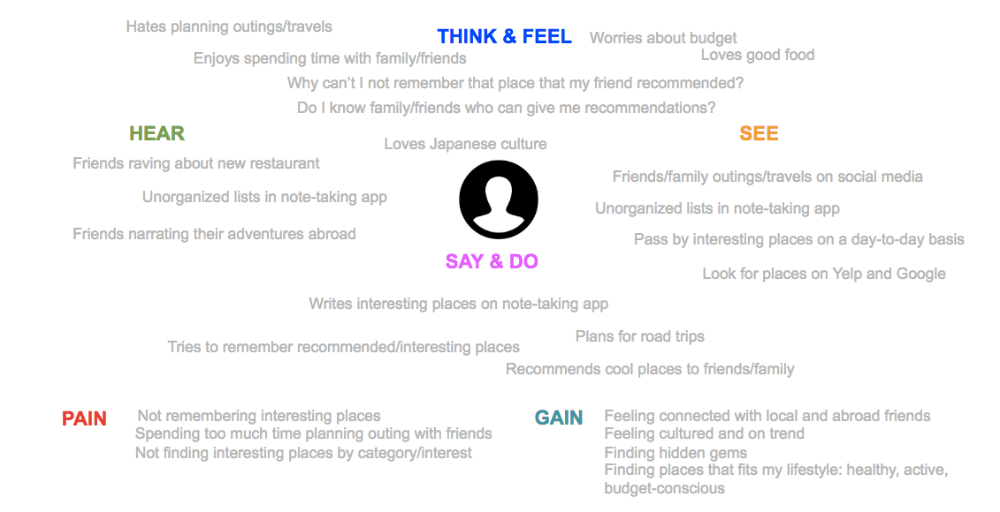
Two personas with different motives and lifestyles were created to represent our audience.
Tim
I always enjoy having good food with good company.
Age:
28
Gender:
Male
Family situation:
Single
Location:
Los Angeles, CA
Occupation:
Software engineer
Interests:
good food, video games, martial arts, biking, climbing
Technical comfort:
High
Devices:
too many to count
Backstory
Tim has lived in Los Angeles, CA for 4 years now. He has previously lived in Japan, France and Australia and has kept in touch with friends there. As an introvert, he doesn't like to go out by himself but enjoys knowing which restaurant to go to when going out with friends. He gets a lot of recommendations from his family/friends abroad, local friends, coworkers, acquaintances but doesn't have a good system to store these recommendations and have them resurfaced when the appropriate time and location comes.
Goals & Motivations
Easily find good restaurants to go to, when at home or traveling
Store recommendations in one place
Enjoy good food with good company
Frustrations
Does not have one place where interesting places are stored, instead uses his brain, notes, google maps bookmarks
Does not have location resurfacing when time and location is appropriate
I love rediscovering my hometown with old and new favorites.
Age:
55
Gender:
Female
Family situation:
Married with 2 children
Location:
Houston, TX
Occupation:
Artist
Interests:
good food, tango, theater, history, arts
Technical comfort:
Medium
Devices:
iPhone, Mac laptop
Backstory
Emily has lived in Houston, TX her whole life. She likes going to her favorite places but also be in the know for new and upcoming cool places. She finds her favorite spots from friends and social media.
Goals & Motivations
Explore the cities she lives in or travel to
Spend quality time with friends/family
Be in the know for cool places to go to
Frustrations
Does not have one place where interesting places are stored, instead uses memory, notes and sms
Needs a location for a place with a particular interest and can't easily remember/find it
Is unsure how and what app to download on her phone and usually asks her children for help
After our audience was defined, it was time to research websites/apps/tools solving problems similar to ours. The research included social media, tour guides and planning products.
This research led us to questions we will eventually have to answer:
Those sessions helped us better understand the classifications of places, users' goals as well as focus on individual places and not maps or itineraries.
Locations were divided within 2 classifications:
favorite, bucket list or back-pocket item
close-by or far
Users had 4 main goals:
recommend places to people
find favorite places
find places for a specific city
find unvisited locations
Some cards ("bike paths", "maps of places to see while visiting a city" and "your cousin's traveling places") were too general and confused participants as they didn't describe a specific place. It will be more important to focus on storing/retrieving individual places than figuring out how they fit into an organized maps or itineraries.
User testing v1
Once I understood users' goals, and places' classification better, a sitemap and wireframes were created and user testing implemented.
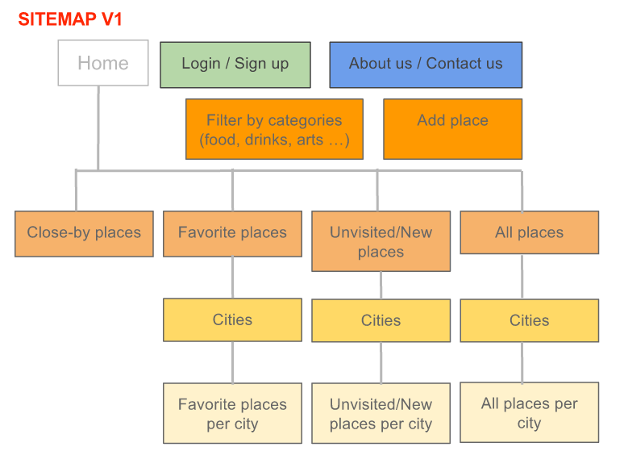
Home/Add place/Categories wireframes v1
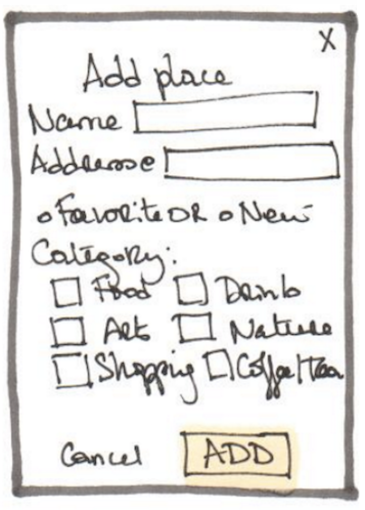
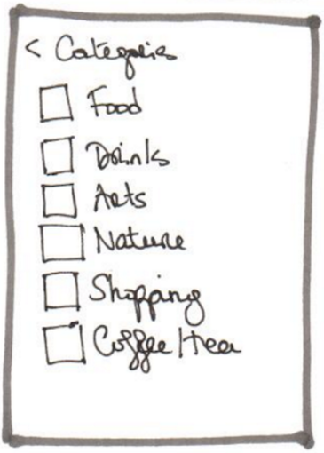
Main menu wireframes v1
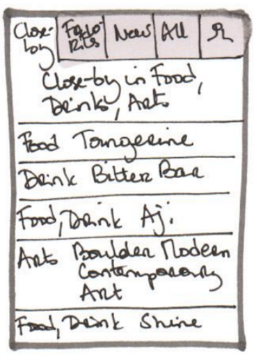
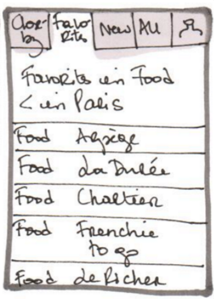
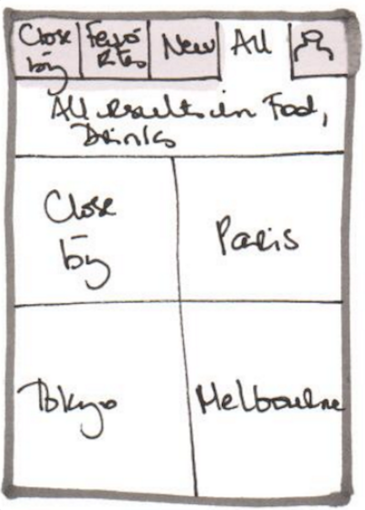
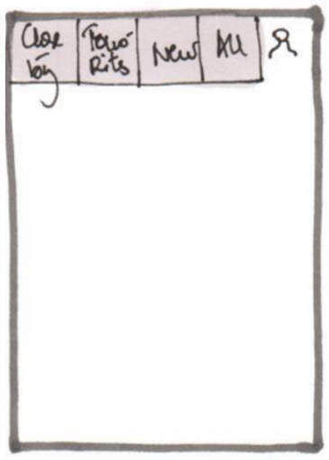
During the first round of user testing, I showed users wireframes and asked for their first general impressions: what did they think the app do? where would they click and why?
After testing the v1 wireframes, I realized that the main menu was confusing as places could appear in more than one menu items. I had to find a better way to differentiate close-by/favorite/new places and to find places per cities. The places categories feature was successful and was kept in the following version.
User testing v2
For v2, I rethought the main menu while still keeping the close-by/favorite/new types within the app, made city/country search easier, added on-boarding process and streamlined the look with logo and icons.
The v2 user testing consisted in 3 in-person usability sessions using a user testing script and interactive wireframes on popapp. I ask the users to perform 5 tasks:
Describe the homepage
Create an account
Find closest locations to where (s)he was now
Find locations in a specific city
Add location
Three usability problems stood out:
The words used for locations types (favorite, bucket list, back pocket) were confusing
After the second round of user testing, some features were validated and some still need to be worked out but we have enough to start building a MVP.
MAIN FEATURES
ACCEPTANCE CRITERIA
As a user, I need to be able to see all places.
List all the saved places for the user to see. Each place has a name, address and notes.
As a user, I need to be able to see the 20 closest places.
List all the 20 closest places started with closest for the user to see.
As a user I need to be able to add an interesting place and see it the list of places.
User should be able to enter a location, have it verified and saved to other locations.
As a user, I need to be able to edit interesting places.
All places need to have an edit button. Each button must be clickable and allow places to be modified and saved.
As a user, I need to be able to delete interesting places.
All places need to have an delete button. Each button must be clickable and allow places to be deleted.
As a user, I need to be notified when I am close-by a listed place.
When within 5 miles of a place, put up a notification.
As a user, I need to view places per cities.
As a user, I need to view/add/edit places with categories.
Add categories field to place and let users view/add/edit them.
As a user, I need to be able to filter places by categories.
As a user, I need to view/add/edit places with types.
Add types field to place and let users view/add/edit them.
As a user, I need to be able to filter places by types.
As a user, I need to be able to register/login/logout .
As a user, I need to be able to fill in my default settings .
Style Guide
I want Locally to be the best, comforting and fun friend you got to when you need help to find a place to eat, to explore or just hang out. Your friend that remember your favorite restaurant but also can give you new places to try out.
This style guide share the guidelines to ensure the comforting and fun branding as well as a consistent look.
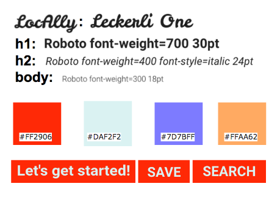
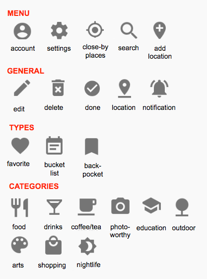
Conclusion
Once a device is chosen, MVP's user stories can start being implemented. At the same time, wireframes needs to be worked out with at least another round of user testing sessions and eventually polished wireframes following the style guide needs to be created with Sketch.
Locally was a fun project to practice my UX skills and become more familiar with the UX process. I have a few ideas on improvements/changes but for now, I am calling the project done with a potential extension if I decide to work with Sketch and/or learn Android development.

 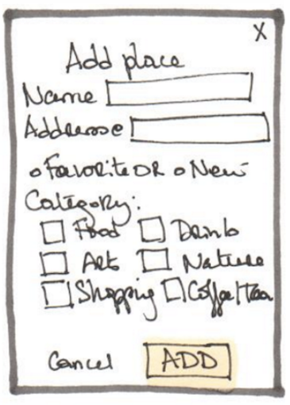
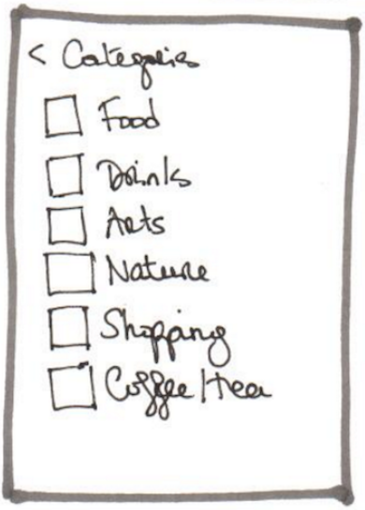
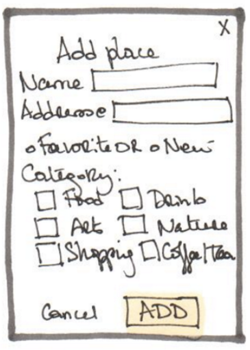
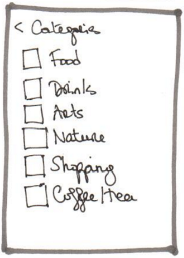
 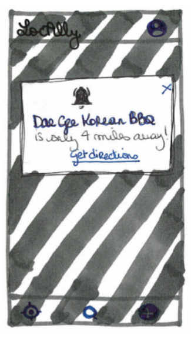
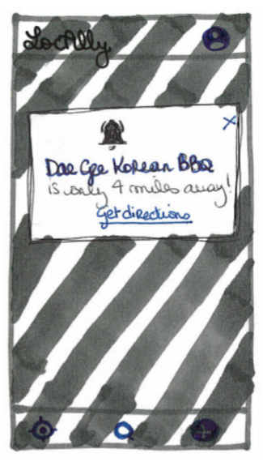